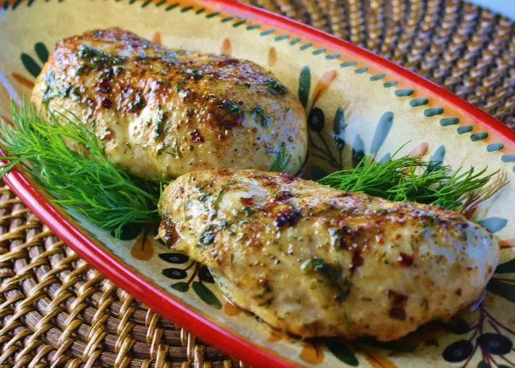

Baked Chicken Breasts

Description
An easy chicken breast recipe made with few ingredients.
I use this as a basic baked chicken recipe when another
recipe calls for cooked chicken. It works great for everything
and is super customizable. Sometimes I use garlic salt or other
seasonings, depending on what I'm using it for.
Ingredients
- 1/4 cup butter, melted
- 1 teaspoon salt
- 4 skinless, boneless chicken breast halves
Steps
- Preheat oven to 350 degrees fahrenheit. Lightly butter a baking dish.
- Stir together melted butter and salt in a bowl.
- Arrange chicken in the prearranged baking dish. Brish mixture onto chicken until thoroughly coated, pouring any extra over chicken.
- Bake in the oven untril no longer pink in the center and juices run clea, 30 to 45 minutes. An instant-read thermometer inserted into the center should read at least 165 degrees fahrenheit.